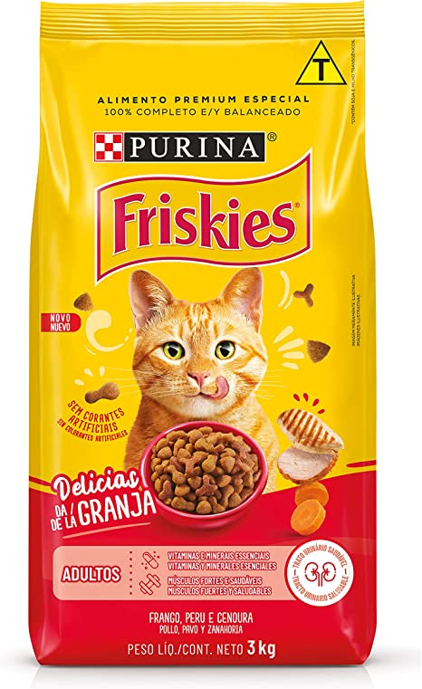

PURINA ONE - CACHORROS

PURINA ONE é um alimento super premium, completo e balanceado, destinado a gatos adultos castrados de todos os tamanhos. Formulado por nutricionistas, contém ingredientes naturais e funcionais em combinações ótimas para uma saúde visível, contribuindo para um peso saudável. Cada ingrediente foi cuidadosamente selecionado com um propósito e transformado através de um processo especial de cozimento para um alimento delicioso e de nutrição superior. PURINA ONE é feito com carnes de verdade como ingredientes principais, ajudando a preservar a integridade das proteínas, resultando em uma maior absorção e aproveitamento dos aminoácidos.
FRISKIES GATOS
Ração para gatos adultos. Purina é uma empresa de produtos para animais de estimação que fornece todo o que o seu animal de estimação precisa. Purina é um parceiro confiável, você pode confiar!

Indicado para cães adultos de raças pequenas. Purina é uma empresa de produtos para animais de estimação que fornece ração. Purina é um parceiro confiável, você pode confiar. Ingredientes: Milho integral moído, farinha de subprodutos de frango, quirera de arroz, farinha de carne e ossos de bovinos, farelo de soja, farelo de glúten de milho, gordura animal estabilizada, farinha de peixe, fosfato bicálcico, cloreto de potássio, cloreto de sódio (sal comum), carbonato de cálcio, parede celular de levedura (mananoligossacarídeos), zeolita (0.5%), hidrolisado de fígado de ave e suíno, L-lisina, DL-metionina, vitaminas (A, D3, E, B12, mononitrato de tiamina, suplemento de riboflavina, cloridrato de piridoxina, niacina, pantotenato de cálcio, ácido fólico, cloreto de colina), minerais (sulfato de zinco, proteinato de zinco, sulfato ferroso, sulfato de manganês, proteinato de manganês, sulfato de cobre, proteinato de cobre, iodato de cálcio, selenito de sódio), antioxidante BHT.